Hobro 2
Feinkörniger, hellgrauer und rötlicher Granit
Größte Höhe: 152 cm
Größte Breite: 100 cm
Dicke unten: 35 cm
Runenhöhe ca.: 12 cm
Runeninschrift : Thori errichtete diesen Stein nach Karl dem Guten, seinem Fahrtgenossen, einem sehr achtbaren "dræng".
Hobro 1 - zerstört/verschwunden
Bläulicher Stein
Höhe ca. 140 cm
Breite ca. 63 cm
Runeninschrift : Thorsten (?) errichtete diesen Stein nach Øgoti und iₓal Vater ₓrt kuþ (Runen).
42 - Hobro 2 - Letztes Update 25.08.2025
Listennummer : DR 127 / DK NJy 74
| Navidaten: 56.63850 9.79289 oder: Adelgade 28, 9500 Hobro |
Transliteration: : þuriR : risþi : stin : þąasi : aufti : karl : hin : kuþąa : fRlaka : sin : harþ|a : kuþąan : trRk :
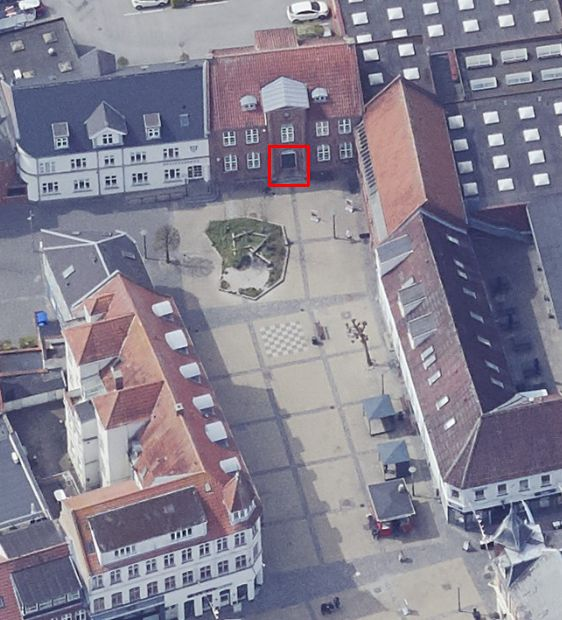
Das ist ein Luftfoto vom 09.05.2023 von Skråfoto - Lizenz: CC BY 4.0 - das den Eingang zur Stadtbibliothek zeigt, in deren Vorraum der Runenstein steht. Skråfoto ist eine Webanwendung, die von Klimadatastyrelsen weltweit kostenlos bereitgestellt wird. Die Aufnahmen werden seit 2017 alle zwei Jahre erneuert und neben einer Senkrechtaufnahme wird ein Schrägbild aus jeder Himmelsrichtung angeboten, das man über eine Adresssuche aufrufen kann.
Über diesen Runenstein wurde erstmals im Jahre 1623 berichtet, als er auf dem Kirchhof von Hobro stand. 1654 lag er dann im Posemagers Hof, bei der Kirchhofeinfriedung, wie Johannes Mejer (* 1606 in Husum; 1674, Mathematiker und Kartograf) schrieb (siehe unten). In der Mitte des 19. Jahrhunderts wurde er bei der neuen Kirche von Hobro aufgestellt und später in deren Waffenhaus verbracht. Danach kam er in die Vorhalle des damaligen Hobro-Museums, was heute Teil der Stadtbibliothek ist. Der Runenstein steht auf einem aus Backsteinen gemauerten Fundament in der Eingangshalle der Stadtbibliothek (Öffnungszeiten über deren Webseite abzuklären).
Die Inschrift wird von den Runologen auf die Zeit von 970-1020 datiert. Sie beginnt in der unteren linken Ecke und folgt dem Rand des Steins, Konturanordnung mit horizontaler Grundlinie (Von Hans Christiansson, Uppsala 1959, "Sydskandinavisk stil : studier i ornamentiken på de senvikingatida runstenarna" als Portalornamentik bezeichnet).
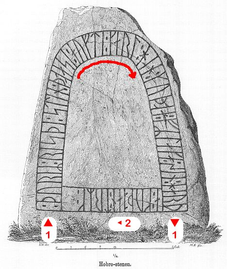
Leserichtung von mir eingezeichnetEs gibt mit gleichartigen Inschriftanordnung in Jütland nur noch den Runenstein Glenstrup 1 (DR 122), der sich heute in der Runensteinsammlung im Nationalmuseum in Kopenhagen befindet. Darüber nimmt man an, dass beide aus der gleichen Werkstatt stammen / vom gleichen Runenritzer gefertigt wurden. Glenstrup liegt nur ca. 7 km südlich von Hobro. Der ursprüngliche Standort von diesen beiden Runensteinen ist jeweils unbekannt. Trotzdem nimmt die Forschung an, dass der Stein von Glenstrup auf einem kleinen Hügel stand, der südlich vom dortigen Kirchhof lag.
In Hobro muss Karl entweder umgekommen oder durch seine Handelsfahrten bekannt geworden sein.
Zu diesem Runenstein gehört der fast gleichlautende Runenstein von Ås in Västergötland / Schweden (Vg 112), wobei es sich laut Erik Moltkes (*04.04.1901 - 19.10.1984, Runologe, Historiker - link-LIVES) Forschungen dort offenbar um Karls Heimat gehandelt hat. Judith Jesch (*1954) vertritt in einer Studie von 2001 (Ships and Men in the Late Viking Age. The Vocabulary of Runic Inscriptions and Scaldic Verse) die Auffassung, dass Thori und Karl aus Dänemark stammten. Dessen Inschrift lautet:
Thori errichtete diesen Stein nach Karl seinem Fahrtgenossen, einem sehr achtbaren dræng.
Quelle: Västergötlands runinskrifter (SRI band 5, 1940-1970), Vg 80-149. Seiten 136-278 - Dieser Runenstein auf den S. 182-84, S. 47-49 in der pdf-Datei
Erstmals habe ich diesen Runenstein am Mittwoch, 27.07.1988, aufgesucht. Danach war ich nochmals am Dienstag, 21.08.1990, am Dienstag, 30.09.2003 und am Freitag, 23.08.2013, vor Ort.
Bei meinem Besuch in Hobro am Freitag, 26.08.2016, hatte ich auch Gelegenheit den Runenstein in der Stadtbibliothek zu fotografieren:
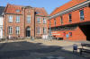 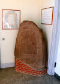 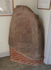 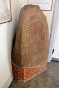 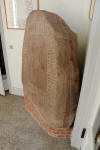
Im Rahmen meiner 2022er Jütland Wikinger Tour habe ich auch am Dienstag, 14.06.2022, vorbeigeschaut und diese Fotografien gefertigt.
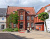 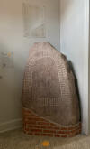 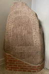 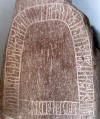 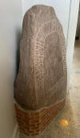 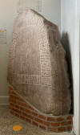 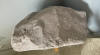
Ole Worm (*13.05.1588 - 31.08.1654, Arzt, Universalgelehrter und der Begründer der Runologie)
 Bildquelle:
Digitale Sammlung der Königlichen Bibliothek Kopenhagen -
Lizenz:
Public Domain
Bildquelle:
Digitale Sammlung der Königlichen Bibliothek Kopenhagen -
Lizenz:
Public Domain
hatte den dänischen König Christian IV. (*12.04.1577 - 28.02.1648)
 Bildquelle:
Wikipedia - Lizenz:
Public Domain
Bildquelle:
Wikipedia - Lizenz:
Public Domain
dazu bewogen am 11. August 1622 einen Brief an die Bischöfe von Dänemark und Norwegen zu senden, um darüber die Pfarrer im Land auzufordern alle Informationen zu Denkmälern, Runensteinen, Grabhügel usw. an ihn zu melden, um die älteste Geschichte Dänemarks zu beleuchten. Unterstützer oder gar treibende Kraft war wohl Christian Friis (*4. November 1581 auf Gut Krastrup in Farstrup - 01. Oktober 1639, dänischer Adliger und königlicher Kanzler).
 Bildquelle:
Wikipedia - Lizenz:
Public Domain
Bildquelle:
Wikipedia - Lizenz:
Public Domain
Der Originaltext dieses Briefes lautet auszugsweise: "Wor gunst tillforn. Wy bede Eder och wille, at I Eders mueligste flid ahnwender allewegne wdj Eders stigt att opsøge och antegne alle slags antiquiteter och documenter effter medfølgende fortegnelsis indhold, och att I saadanne med flid lader optegne och engang inden Paaske førstkommendis wdj wortt cantzelie lader indleffuere. Dermed skie wor willghe. Befalendis Eder Gud. Skreffuitt paa wortt [slott] Kiøbenhaffn, den 10. augusti anno 1622. Vnder vort signett.Christian."
Darüber kam es zu einer Rückmeldung aus Hobro mit der ersten Zeichnung der Inschrift des Runensteins aus dem Jahr 1623, ausgeführt vom örtlichen Pastor Jens Sørensen Fog, die aus den Præsteindberetninger til Ole Worm, Band 2 : Indberetninger fra Århus, Fyns og Lunde stifter 1623-25, Frank Jørgensen, 1974 - Seite 10 stammt. Dort findet sich der knappe Eintrag: "Lapis quidam in nostro cæmiterio Hopontano inuenitur cum hujusmodi figuris insculptus quod manu addita testor. Joannes Severini Fogius, pastor ecclesiæ Hopontanæ."
Übersetzung: "Dieser Stein befindet sich auf unserem Friedhof in Hobro mit solchen geschnitzten Zeichen, die ich, Jens Sørensen Fog, Gemeindepfarrer in Hobro, mit meiner von Hand hinzugefügten Zeichnung bezeuge."
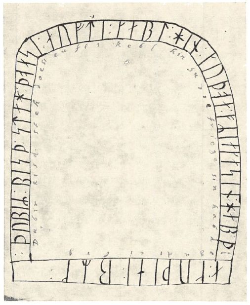
Die handschriftliche Transkription der Runen stammt laut Manuskript von Ole Worm selbst!
Durch Jon Skonvig (*1600 - 1664, Pfarrer und der Runenzeichner für Ole Worm) wurde er im Jahre 1627 im Kirchhof von Hobro vorgefunden und gezeichnet. Skonvig war zuvor von Ole Worm (*13.05.1588 - 31.08.1654, Arzt, Universalgelehrter und der Begründer der Runologie) ins Land hinaus entsandt worden, um die bekannten Runendenkmäler zu untersuchen und zu zeichnen.
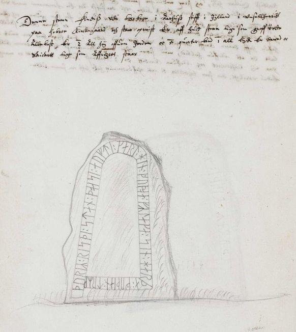
Die Aufzeichnungen von Jon Skonvig - sechs Handschriften - haben sich in der sogenannten "Arnamagnæanske samling, AM 366-371 fol." (zu deutsch: Arnamagnäanische Sammlung) erhalten und wurden inzwischen alle digitalisiert. Hier die entsprechende Seite 6v der A.M. 367 fol., die die Runensteinzeichnung und die dazu von Skonvig angefertigten Aufzeichnungen - siehe oben - enthält. Die A.M. 367 fol. ist über die Webseite "www.handrit.is" als Digitalisat abrufbar.
Über der Zeichnung hat Skonvig folgenden Text aufgeschrieben: "Denne steen Findiss vdi Hobroe i Aarhuss stifft i Jÿlland i Vnsellherritt paa hobroe Kirckegaard och staar opreist. Er aff huid steen som Groff vecte Allebast, Er 2 All hoÿ offuen Jorden oc 5 quorter bred 1 all tÿck Er daned oc Skickett lige som Affritzett staar".

Am Mittwoch, 28.09.2022, war ich in der Universität Kopenhagen in der Arnamagnæanske Samling und durfte das Original - AM 367 fol. - in Händen halten und eingehend fotografieren. Man bat mich aber von einer Veröffentlichung meiner Fotos abzusehen und stattdessen auf die digitalisierte Handschrift über www.handrit.is zu verweisen.
Die Zeichnung Skonvigs verwendete Ole Worm in seinem bedeutenden Runenwerk "Danicorum Monumentorum Libri Sex, Hafniae, 1643" auf der Seite 282 in Form dieses Metallschnitts:
Screenshot aus Digitale Bibliothek Mecklenburg-Vorpommern: https://nbn-resolving.org/urn:nbn:de:gbv:9-g-4876466
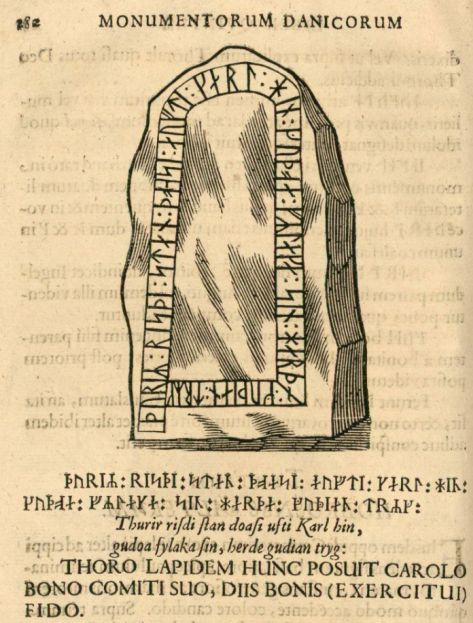
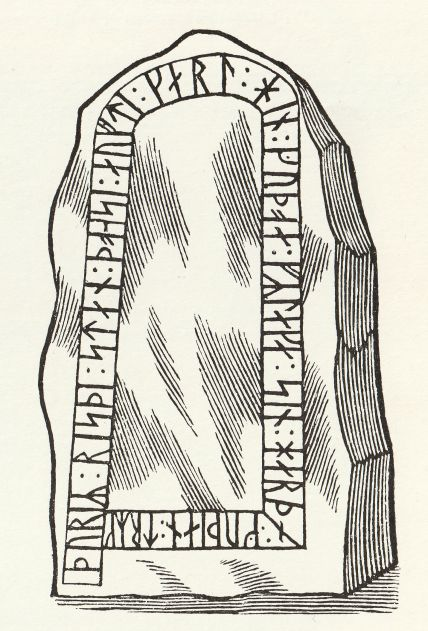
Rechte Abbildung: Scan aus dem Buch von Erik Moltke "Jon Skonvig og de andre runetegnere. Et bidrag til runologiens historie i Danmark og Norge I-II, 1956-58", Band 1 - S. 46.
Der Runenstein sollte dann aufgrund einer königlichen Verfügung vom Freitag 09.02.1652, erlassen durch König Frederik III. von Dänemark und Norwegen (* 18. März 1609 - 09. Februar 1670)
 Bildquelle:
Königl. Sammlung - Schloss Rosenborg - Lizenz:
Public Domain
Bildquelle:
Königl. Sammlung - Schloss Rosenborg - Lizenz:
Public Domain
nach Kopenhagen versandt werden (siehe: Nordisk Tidsskrift for Oldkyndighed, Band 1, 1832, S. 326). Die Verfügung wurden den regionalen Lehensmännern zugestellt. Dort heißt es als entsprechende Aufforderung: "Frands Povisk til Halds Lehn; Len⸗Stenen; to Hiermind⸗ Stene; Torup⸗Stenen; Grondal⸗Stenen; begge Longe⸗Stenene; Grensted⸗Stenen; begge Hobro⸗Stenene". Dieser Anweisung kam man hier, wie andernorts auch, jedoch nicht nach. Seitens Kopenhagen wurde nicht nachgehakt, da dort 1654 die Pest ausbrach, was auch Ole Worm noch im gleichen Jahr den Tod brachte.
Im Jahr 1645 wurde das Werk "Notae uberiores in Historiam Danicam Saxonis Grammatici" von Stephani Johannis Stephani (*23.07.1599 - 22.04.1650) veröffentlicht. Auf der Seite 6 macht er Ausführungen zu diesem Runenstein und bringt den Metallschnitt aus dem Werk von Ole Worm.
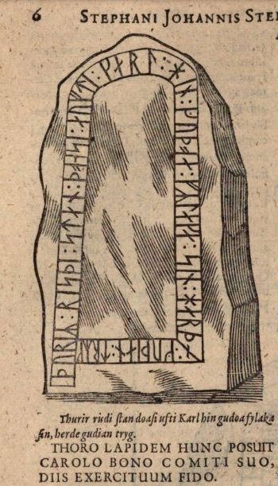
Der Runenstein wurde im Jahre 1654 durch Johannes Mejer (* 1606 in Husum; 1674, Mathematiker und Kartograf) in seiner handgeschriebenen Liber monumentorum Danicorum, qvi monumenta Danica Olai Wormii partim emendat partim locupletat (pdf-Datei anhand eigener Fotos von mir erstellt) von 1654 (Blatt 10 / 11) - Königlichen Bibliothek in Kopenhagen - GKS 2371 kvart - erwähnt wird Er schrieb, dass der Runenstein in "Posemagers Hof" beim Kirchwall lag (Letzter Satz auf der Rückseite der Seite 10 rechts neben Zeichnung, oberhalb Wiedergabe der Inschrift).
Auf der S. 11 findet sich eine Wiedergabe des u.a. Runensteins Hobro 1 - siehe unten.
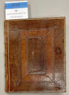 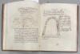 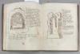
 Bildquelle:
Wikipedia - Lizenz:
Public Domain
Bildquelle:
Wikipedia - Lizenz:
Public Domain
hinzugefügt worden sein. Text und Zeichnungen der Handschrift - auch im Zusammenspiel - sind ansehnlicher ausgeführt als in NKS 799.
In der Königlichen Bibliothek in Kopenhagen hat sich von Johannes Meier aber auch noch eine zweite Handschrift erhalten - NKS 799 kvart - Joh. Mejeri Monumenta Runica in Dania (pdf-Datei anhand eigener Fotos von mir erstellt). Deren Entstehungsdatum ist nicht bekannt. Der Runenstein findet sich auf Blatt 8 / 9 in zwei verschiedenen Zeichnungen. Auf der S. 9 findet sich eine Wiedergabe des Runensteins Hobro 1 - siehe unten.


NKS 799 kvart - Joh. Mejeri Monumenta Runica in Dania (pdf-Datei anhand eigener Fotos von mir erstellt) - Papier - 44 Blatt, Blatt 41-44 unbeschrieben, aus dem 18. Jahrhundert, vormals Nr. 70 in der Manuskript Sammlung von Peder Frederik Suhm (*18.10.1728 - 07.09.1798).
 Bildquelle:
Wikipedia - Lizenz:
Public Domain
Bildquelle:
Wikipedia - Lizenz:
Public Domain
Es handelt sich um
ein Büchlein mit einfachem Pappeinband, der Buchrücken ist aus Leder und
verstärkte Ecken aus Leder weist der Buchdeckel auf. Es hat die
Maße: H: ca. 20
cm / B: ca. 17 cm / D: ca. 1,5 cm. Zu den einzelnen Zeichnungen im Büchlein
wurde ein einfacher Maßstab abgebildet.
Bei beiden Exemplaren
weist immer das rechte Blatt der Doppelseite in der oberen Ecke eine mit
Bleistift geschriebene Seitenzahl auf. Diese beiden Werke sind Abschriften von
früheren Werken, die die Zeit nicht überdauert haben.
Vielleicht sind sie in Kopenhagen beim Großbrand von 1728
vernichtet worden, als neben zahlreichen privaten Beständen auch ca.
35.000 Bücher der Kopenhagener Bibliothek ein Raub der Flammen wurden!
Die
GKS 2371 kvart soll laut
Prof. Ludv. F. A. Wimmer
(*07.02.1839 -
29.04.1920, Philologe und Runenforscher
-
link-LIVES -
Politiets registerblade
-
Bestattungsprotokoll)
 Bildquelle:
Fotografie zw. 1877-1900 von Fotograf Hansen & Weller
-
Det Kgl. Biblioteks billedsamling - Lizenz:
Public Domain
Bildquelle:
Fotografie zw. 1877-1900 von Fotograf Hansen & Weller
-
Det Kgl. Biblioteks billedsamling - Lizenz:
Public Domain
und seinen Infos von Christian Bruun (*10.12.1831 - 28.02.1906, Königlicher Oberbibliothekar - link-LIVES)
 Bildquelle: Fotografie
um 1880 von Fotograf J. Petersen
(*19.03.1829 -
01.02.1905) -
Det Kgl. Biblioteks billedsamling - Lizenz:
Public Domain
Bildquelle: Fotografie
um 1880 von Fotograf J. Petersen
(*19.03.1829 -
01.02.1905) -
Det Kgl. Biblioteks billedsamling - Lizenz:
Public Domain
von Niels Foss selbst abgeschrieben worden sein. Er hat die Texte laut den Studien von Erik Moltke (*04.04.1901 - 19.10.1984, Runologe, Historiker - link-LIVES)
 Bildquelle: Scan von Buchumschlag "Runerne i Danmark og ders
oprindelse" - Erik Moltke - 1976 - Lizenz:
CC-BY-SA
Bildquelle: Scan von Buchumschlag "Runerne i Danmark og ders
oprindelse" - Erik Moltke - 1976 - Lizenz:
CC-BY-SA
offenbar überarbeitet, verkürzt oder geändert und seine eigene
Orthografie eingebracht (z.B. alt: haffuer - bei Foss: haver / tyck/tyk /
kircke/kirke / oc/og u.a.).
In der
NKS 799 kvart hingegen steht auf der Seite 37 links unten "Niels
Knudsen Jerne" und seine Handschrift lässt vermuten, dass er die
gesamte Abschrift angefertigt hat. Er war offenbar ein professioneller Schreiber
und könnte mit dem Niels Knudsen identisch sein, der
1728 "Skriverkarl" auf dem Holmen (Stadtviertel von
Kopenhagen) war, also ein Mann der schnell viele Texte schreiben und liefern
konnte. Er wurde am 08.11.1737 zum "ekvipageskriver"
ernannt. Es scheint dass er sich entgegen
Niels Foss sehr eng an das Original gehalten hat.
Offenbar gab es laut dem Katalog über die Büchersammlung
von
Peter
Hansen Resens (*17.06.1625 -
01.06.1688)
 Bildquelle:
Wikipedia - Lizenz:
Public Domain
Bildquelle:
Wikipedia - Lizenz:
Public Domain
"Bibliotheca
Regiæ Academiæ Hafniensi donata" Hafniæ (Kopenhagen) von
1685 - siehe
S. 273 - früher noch ein drittes Werk von
Johannes Meier mit dem Titel "Johan. Meieri
liber MS. de Monumentis Runicis sive antiqvis Danicics".
Quelle: Erik
Moltke -
Jon Skonvig og de andre runetegnere. Et bidrag til runologiens historie i
Danmark og Norge I-II,
1956-58
Band 2
-
Kapitel 13
Zwischen Montag, 26.09.2022, und Mittwoch, 28.09.2022, habe ich in der Königliche Bibliothek - Den sorte Diamant - in Kopenhagen - u.a. diese beiden alten Handschriften nach Online-Vorbestellung zur Ansicht erhalten. Ich durfte mir Aufzeichnungen machen, sie aber auch uneingeschränkt fotografieren. Ich habe sie mit dem Smartphone komplett als Doppelseiten fotografiert und daraus jeweils eine pdf-Datei erstellt. Vielleicht hat ja jemand Bedarf an diesen seltenen Ausgaben, die aufgrund ihres Alters keinem Urheberrrecht mehr unterliegen.
Ungewöhnlich ist, dass dieser Runenstein jeweils in zwei verschiedenen Zeichnungen wiedergegeben wird. Allerdings ist die jeweils erste Zeichnung gegenüber dem sie begleitenden Text unvollständig, d.h. es fehlt jeweils die untere Querlinie mit dem Textabschnitt: ": kuþąan : trEk :".
Peder Hansen Resen (*17.06.1625 - 01.06.1688, Jurist und Historiker) - Er hat mit dem von ihm über 20 Jahre gesammelten Material das großartige Werk "Atlas Danicus", bestehend aus letztlich 39 Folianten, geschaffen. Nur geringe Teile wurden aber zu seiner Lebzeit gedruckt. Die Bände wurden wenige Jahre nach seinem Tod 1692 an die Königliche Bibliothek Kopenhagen übergeben. Aufbewahrt wurden sie auf dem Dachboden der Trinitatis Kirche. Dort wurden sie fleißig studiert, abgeschrieben und zeitweise ausgeliehen. Leider wurde dann ein Großteil davon beim Kopenhagener Großbrand 1728 zerstört. Es hat sich neben einigen Originalseiten - siehe Arnamagnäanische Sammlung - AM 359 fol. / AM 360 fol. / AM 361 fol. und AM 362 fol. (digitalisiert) - nur eine (verkürzte) Abschrift und außerdem Kupferstiche von etwa 200 Städteansichten aus der Vogelperspektive erhalten. Originale dieser AM 359/360/361 fol sind über die Universität Kopenhagen - Institut for Nordiske Studier og Sprogvidenskab (NorS) - AM 359 fol / AM 360 fol / AM 361 fol - in sw abrufbar. Eine zweite (verkürzte) Ausgabe war von Vincent Lerche (*04.04.1666 - 28.07.1742, Jurist, Architekt) beauftragt worden, diese wurde aber beim Brand von Schloss Christiansborg im Jahr 1794 vernichtet.
In der Königlichen Bibliothek in Kopenhagen wird seit 1803 in der Sammlung Uldall (186 folio) diese einzige verbliebene Ausgabe, die in den 1750er Jahren durch den Hofbaumeister Laurids de Thurah (*04.03.1706 - 06.09.1759)
 Bildquelle:
Wikimedia - Lizenz:
Public Domain
Bildquelle:
Wikimedia - Lizenz:
Public Domain
aus verstreuten Resten des Atlas Danicus in 7 Bänden rekonstruiert worden war, aufbewahrt:
Wie diesem Titel zu entnehmen ist, gehörte dieses Exemplar vormals Adam Gottlob Graf von Moltke (*10.11.1710 - 25.09.1792, Staatsmann, Diplomat).
 Bildquelle:
Wikimedia - Lizenz:
Public Domain
Bildquelle:
Wikimedia - Lizenz:
Public Domain
Nach dessen Tod erwarb Herman Treschow (*11.12.1739 - 02.05.1797, Professor für Theologie, Pfarrer) diese Ausgabe. Peter Uldall (*29.06.1743 - 11.11.1798, Jurist, Theologe)
 Bildquelle:
Wikimedia - Lizenz:
Public Domain
Bildquelle:
Wikimedia - Lizenz:
Public Domain
wiederum kaufte sie für 170 Rigsdaler (Rigsdaler zu 24 Skilling - damals 1 ½ Mark) nach dessen Ableben. Er hatte aber nicht lange Freude daran, denn er starb ein Jahr später an einem Schlaganfall. Sein Sohn, Justizrat W. A. Uldall, schenkte diese Ausgabe der Kgl. Bibliothek im Jahr 1803, wo dieses großartige Werk noch heute verwahrt wird - Ein Band hat übrigens die Größe H/B/D von 40 cm x 29,5 cm x 9,5 cm.
Im Atlas VI. ist auf den Seiten 371 ff. die Rede von Hobro. Auf der S. 372, letzter Absatz, beginnen die Ausführungen zu den zwei Runensteinen. Auf der Seite 560 Einträge findet sich eine Zeichnung von beiden Runensteinen, die ich am 28.09.2022 vor Ort fotografieren durfte.


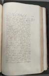 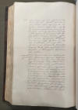 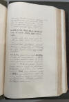 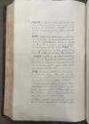 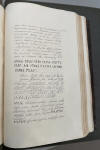 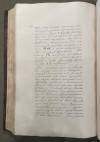 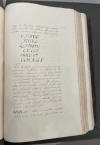 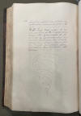
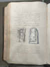 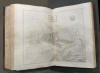
Peder Hansen Resens ATLAS DANICUS, VI, B: Viborg Bispedømme - Chr. Behrend - Übersetzung aus dem Lateinischen ins Dänische - ab S. 372 / 2. Absatz
"...I denne By findes to Stene, som udmærker sig ved Runeindskrifter, som jeg, da de rettelig hører her hen, har ment burde forelægges Læseren her efter Worms Monum. Dan. p. 279-84.
Den første, som pynter en Borgers Dør, er af blaalig Farve og omtrent firkantet af Form (se Worms Monum. Dan., p. 280), med Undtagelse Længden beløber sig til 2 ½ Alen, men Bredden kun til 1 Alen - S. 373 - Indskriften begynder ved det nederste af det indre Baand, og naar den er naaet til det øverste, gaar den nedad og ender i samme, dog saaledes at den maa suppleres med de Ord, som den ydre Linie fremviser.
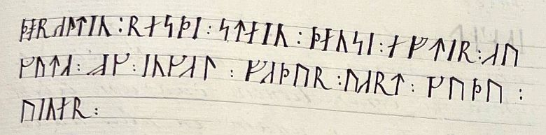
Thoraltin resdi stin densi eftir Auguta, og Ingal Fudur vart Gudu viner.
Thorald rejste denne Sten for Augut og Ingald vor Faders gode Venner.
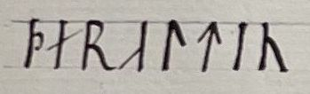
mener jeg maa læses som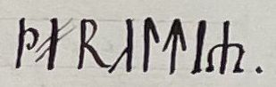
Thoraltr; thi saaledes har det stungne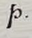
mangfoldige Steder Betydningen Th og kaldes hos Islænderne med et særligt Navn Duss. Men istedetfor Slutnings-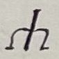
kunde man, da den venstre Streg er mindre tydelig, let læse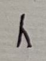
, og Navnet synes sammesat af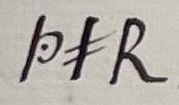
, som betyder Thoro og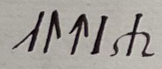
, den ældre, altsaa den ældre Thoro. Eller som ovenfor forklaret, Thoralt ɔ : helt viet til Guden Thor - Seite 374 -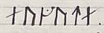
antager jeg er et Egennavn paa en Mand eller Kvinde, skønt det kommer det nu brugelige Augud nærmest, hvilket betyder et Afgudsbillede, han var maaske Thorals Broder.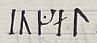
er et gammelt Mandsnavn, som heller ikke sjældent træffes paa Mindesmærker. Bemærk her Sammentrækningen af de to Bogstaver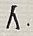
og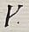
til ét, som ikke er sjælden i andre Indskrifter, og som i denne ogsaa er anvendet in Ordet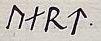
, idet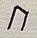
og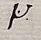
vokser sammen til en Rune. -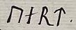
tror jeg betyder "vor" for at angive, at Ingeld har været Thoralds og Auguts Fader, og for ham synes endelig det, som indeholdes i den ydre Linie, at være sat.- tror jeg er "god", thi Sønnerne roser deres Fader for hans Godhed. Inskriftens ydre Række synes at væres anbragt efter den første. Man fortæller, at denne Sten er flyttet herhen fra Kirkegaarden, men om det forholder sig saaledes, kan jeg ikke sige med Bestemhed. Et Bevis giver maaske den anden, som endnu ses sammesteds, om hvilken vi nu skal tale.Samme Bys Kirkegaard prydes af en anden Sten, - S. 375 - som nærmer sig en Gravstens Form, idet den er bredere nedadtil, og Toppen er lidt tilspidset; den bestaar af ædlere Stof, der ganske ligner Marmoret i Glans, og hvid Farve. Den rager to Alen op over Jorden, har en Bredde af 5 Kvarter, en Tykkelse af 1 Alen. Indskriften gaar fra venstre Side fra Bunden over Toppen til den højre og ender ved Begyndelsen. Se Billedet i Worms Monum. Dan. p. 282
Thurir risdi stan doasi ufti Karl hin gudoa fylaka sin, herde gudian tryg.
Thoro satte denne Sten for Karl, sin gode Ledsager, der var tro mod de gode Guder (mod Hæren).
betegner Thoro, et Navn, der i gamle Dage var meget almindeligt blandt vore Forfædre, fordi man med det hilste den højeste af Guderne. Maaske den, som ovenfor kaldtes .
forklarer jeg som Ledsager af "at fylge" ɔ : ledsage, - S. 376 - det samme Ord vil man finde paa Sjørupstenen, som er den 12te skaanske Runesten, men der skrives det med I, i hvis Sted der her staar et Bogstav, som man sjældent møder i vore Mindesmærker med den Betydning, nemlig ; selv om dette i Almindelighed er Slutnings-R, betegner det dog her, ligesom ogsaa i midt i Ordet, ikke R men Y. Af Islænderne kaldes det YR og anses for et af de ældste Tegn, hvorom vi har forklaret udførligere i vor Literatura Runica , Cap. 12.
Ledsager kaldes den, som ikke blot er uadskillelig knyttet til en anden, og er ligesom hans Husfælle, men ogsaa den, som anerkender den anden som sin Overordnede, hvem han skylder Lydighed. Saaledes kalder vor Saxo i Fortalen til sin Historie sig "Biskop Absalons ringeste Ledsager" og i 6. Bog kalder Stærkodder sig Frodes Ledsager: "Hvornaar betegnedes jeg som Frodes Ledsager?" Her derimod synes det at betyde Ven, i hvilken Betydning nogle fordum hos Romerne kaldtes Kejsernes Ledsagerne og Venner, nemlig de som var deres Raadgivere, og fulgte dem paa Krigstog, hvorom Spartianus i Hadrians Levnedsbeskrivelse: - S. 377 - "Naar han dømte, havde han i sit Raad, ikke blot sine Venner og Ledsagerne, men ogsa Retskyndige." - En gammel Sten i Milano: | C. Sentio | Severo | Qvadrato | C. V. Cos. | Amico et | Com. Aug. N | : "(Opsat) til Ære for C. Sentius Severus Quadratus, en navnkundig Mand, Consul, vor Kejsers Ven og Ledsager."
Se herom vor Stephanius' udførligere Udviklinger i Noterne til Saxos Fortale. Ellers kaldtes alle de, som hørte til Keyserens Følge, for Ledsagere, og Følge var det samme som Hof, Omgangskreds. Af Ciceros 4de Tale mod Verres synes man at kunne slutte, at i den romerske Repuliks Blomstringstid kaldte man dem for Ledsagerne, som i offentlige Forretningsanliggender ledsagede Prokonsuler og Statholdere til Provinserne, som Præfekter, Skrivere, Herolder, Læger o. s. v.
etc. Denne Formel findes paa mange Stene; hvad jeg mener den betyder, - S. 378 - vil man kunne se i Forkl. af det 8de skaanske Mindesmærke. "Tryg" betyder Troskab. Af dette Ord, som ellers skrives med stungen -Rune, fremgaar tilstrækkeligt Betydningen af Hvis den nemlig skal gengives ved R, vilde der støde tre Konsonanter sammen uden nogen Vokal, og det er ingen Lyd; og samme Bogstav vilde gentages to Gange (om end med forskellige Tegn) hviklet er fornuftstridigt. - Saavidt herom.
Meine Übersetzung vom Dänischen
ins Deutsche: "..In dieser Stadt gibt es zwei Steine, die sich durch
Runeninschriften auszeichnen, die, da sie hierher gehören, dem Leser hier nach
Worms Monum. Dan.
S. 279-84 vorgestellt werden sollten.
Der erste, der eine
Bürgertür schmückt, ist bläulich gefärbt und annähernd quadratisch (siehe
Worms Monum. Dan.
S. 280), mit der Ausnahme, dass die Länge 2 ½ Ellen, die Breite aber
nur 1 Elle beträgt S. 373 Die Inschrift beginnt am
untersten Ende des inneren Bandes, verläuft, wenn sie das oberste erreicht hat,
nach unten und endet in demselben, jedoch so, dass sie durch die Worte ergänzt
werden muss, die die äußere Linie darstellt.
Thoraltin resdi stin densi eftir Auguta, og Ingal Fudur vart Gudu viner.
Thorald errichtete diesen Stein für August und Ingald, die guten Freunde unseres Vaters.
Ich denke, es sollte so gelesen werden Thorald; denn so hat er geritzt. An vielen Stellen bedeutet es Th und wird von den Isländern mit dem besonderen Namen Duss bezeichnet. Anstelle des abschließenden könnte man jedoch, da der linke Strich weniger deutlich ist, leicht lesen, und der Name scheint eine Zusammensetzung aus , was Thoro bedeutet, und , der Ältere, also dem älteren Thoro, zu sein. Oder, wie oben erklärt, Thoralt, ɔ : ganz dem Gott Thor geweiht - Seite 374 - Ich nehme an, ist ein Eigenname für einen Mann oder eine Frau, obwohl er dem heute gebräuchlichen Augud am nächsten kommt, was Götze bedeutet; er war vielleicht Thorals Bruder. ist ein alter männlicher Name, der auch nicht selten auf Denkmälern zu finden ist. Beachten Sie hier die Zusammenziehung der beiden Buchstaben und zu einem, die in anderen Inschriften nicht unüblich ist und in dieser auch im Wort verwendet wird, da und zu einer Rune zusammenwachsen. - bedeutet meiner Meinung nach unser, um anzuzeigen, dass Ingeld der Vater von Thorald und Augut war, und für ihn scheint endgültig festgelegt zu sein, was in der äußeren Zeile steht. - bedeutet meiner Meinung nach gut, weil die Söhne ihren Vater für seine Güte loben. Die äußere Reihe der Inschrift scheint nach der ersten platziert worden zu sein. Es wird gesagt, dass dieser Stein vom Friedhof hierher gebracht wurde, aber ob dem so ist, kann ich nicht mit Sicherheit sagen. Der zweite, der noch an derselben Stelle sichtbar ist und den wir jetzt besprechen werden, liefert vielleicht Beweise.
Den Kirchhof derselben Stadt ziert ein weiterer Stein, - S. 375 - der sich der Form eines Grabsteins annähert, nach unten breiter und oben leicht spitz zulaufend; er besteht aus edlerem Material, im Glanz Marmor sehr ähnlich und von weißer Farbe. Er erhebt sich zwei Ellen über den Boden, hat eine Breite von 5 Vierteln und eine Dicke von 1 Elle. Die Inschrift verläuft von links unten über oben nach rechts und endet am Anfang. Siehe das Bild in Worms Monum. Dan. S. 282.
Thurir risdi stan doasi ufti Karl hin gudoa fylaka sin, herde gudian tryg.
Thoro hat diesen Stein für Karl, seinen guten Gefährten, der den guten Göttern (dem Heer) treu war, gesetzt.
bezeichnet Thoro, einen Namen, der in alten Zeiten bei unseren Vorfahren sehr verbreitet war, da er zur Begrüßung des höchsten der Götter verwendet wurde. Vielleicht derjenige, der oben genannt wurde .
Ich erkläre es als Begleiter von folgen ɔ : begleiten, - S. 376 - Dasselbe Wort findet sich auf dem Sjørup-Stein, dem 12. Runenstein von Skåne, aber dort ist es mit einem I geschrieben, an dessen Stelle ein Buchstabe steht, der in unseren Denkmälern mit dieser Bedeutung selten vorkommt, nämlich ; obwohl dies normalerweise die Endung R ist, hier, wie auch in in der Mitte des Wortes nicht R, sondern Y. Bei den Isländern heißt es YR und gilt als eines der ältesten Zeichen, das wir in unserer Literatura Runica, Kap. 12, näher erläutert haben.
Ein Gefährte wird jemand genannt, der
nicht nur untrennbar mit einem anderen verbunden ist und wie sein Hausherr ist,
sondern auch jemand, der den anderen als seinen Vorgesetzten anerkennt, dem er
Gehorsam schuldet. So nennt sich unser Saxo im Vorwort zu seiner Geschichte
Bischof Absalons unbedeutendster Gefährte und im 6. Buch nennt Stærkodder sich
Frodes Gefährten: Wann werde ich Frodes Gefährte genannt? Hier scheint es
jedoch Freund zu bedeuten, in welchem Sinne einige früher bei den Römern
Gefährten und Freunde der Kaiser genannt wurden, nämlich diejenigen, die ihre
Berater waren und sie auf Feldzügen begleiteten, worüber Spartianus in Hadrians
Biographie: S. 377 Wenn er richtete, hatte er in seinem
Rat nicht nur seine Freunde und Gefährten, sondern auch Rechtsexperten. Ein
alter Stein in Mailand: | C. Sentio | Severo | Qvadrato | C. V. Cos. | Amico et
| Com. Aug. N | : (Errichtet) zu Ehren von C. Sentius Severus Quadratus, einem
berühmten Mann, Konsul, Freund und Gefährten unseres Kaisers.
Siehe hierzu
die ausführlicheren Ausführungen unseres Stephanius in den Anmerkungen zu Saxos
Vorwort. Ansonsten wurden alle, die zum Gefolge des Kaisers gehörten, als Diener
bezeichnet, und Gefolge war dasselbe wie Hofstaat, Bekanntenkreis. Aus Ciceros
4. Rede gegen Verres scheint man schließen zu können, dass in der Blütezeit der
römischen Republik diejenigen als Diener bezeichnet wurden, die Prokonsuln und
Gouverneure in öffentlichen Angelegenheiten in die Provinzen begleiteten, wie
Präfekten, Schreiber, Herolde, Ärzte usw.
usw. Diese Formel findet sich auf vielen Steinen; was ich darunter verstehe S. 378 kann man in der Erklärung zum 8. Skåne-Denkmal nachlesen. "Tryg" bedeutet Treue. Von diesem Wort, das sonst mit der geritzten -Rune, Die Bedeutung ist hinreichend klar. Denn wenn es durch R dargestellt würde, würden drei Konsonanten ohne Vokal aneinanderstoßen, und das ist kein Laut; und derselbe Buchstabe würde zweimal wiederholt (wenn auch mit unterschiedlichen Zeichen), was unvernünftig ist. So viel dazu.
Erik Pontoppidan (Der Jüngere, dänisch-lutherischer Bischof, Theologe und Autor, *03.09.1698 - 20.12.1764)
 Bildquelle:
Wikipedia - Lizenz:
Public Domain
Bildquelle:
Wikipedia - Lizenz:
Public Domain
erwähnt den Runenstein in seinem 1741 erschienen Werk "Marmora Danica selectiora. 2" auf der Seite 129ff (als "Hoponti").
Screenshot aus urn:nbn:de:bvb:12-bsb10328985-6 - Münchener Digitalisierungszentrum, Digitale Bibliothek, Bayerische Staatsbibliothek
Er hat nochmals in seinem Werk von 1768 "Den Danske Atlas" - Band IV, Cap. XI, S. 537-538 (S. 13 unter "Runestene" in der pdf-Datei) Ausführungen zum Standort des Runensteins gemacht.
In der digitalen Sammlung des Nationalmuseums Kopenhagen findet sich diese Zeichnung von Søren Abildgaard (*18.02.1718 - 02.07.1791, Zeichner, Kupferstecher und Geologe)
 Bildquelle:
Jellingprojektet - Lizenz:
Public Domain -
http://www5.kb.dk/images/billed/2010/okt/billeder/object444188/da/
Bildquelle:
Jellingprojektet - Lizenz:
Public Domain -
http://www5.kb.dk/images/billed/2010/okt/billeder/object444188/da/
aus dem Jahr 1767 - Lizenz: CC-BY-SA
Unter der Zeichnung - Originalgröße 22 x 34 cm - wurde von ihm folgende Notiz aufgeschrieben:
Denne Runesteen staaer i det Sydlige Kirkegaards Steengiærde omtrent midt for Kirken i Hobroe. Den stod temmelig dybt i Jorden, og meget af Skriften var skiult af Jord og store Steen, som ieg maatte lade opkaste og afvælte. Steenen, som var bleg brunrød eller Kiødfarvet, syntes at være en Porphyr eller en haard og fiinkørnig Granit, paa den Side, hvor Rune-Skriften stod, var den ganske jevn og plan, samt fiin afsleben og poleret. S: Abildgaard. A(nn)o 1766
Übersetzung: "Dieser Runenstein steht im Steinzaun des südlichen Kirchhofs ungefähr in der Mitte zur Kirche in Hobro. Es war ziemlich tief im Boden, und ein Großteil der Schrift war von Erde und großen Steinen verdeckt, die ich ausgraben und entfernen musste. Der hellbraunrote oder fleischfarbene Stein schien ein Porphyr oder ein harter und feinkörniger Granit zu sein, auf der Seite, wo die Runenschrift stand, war er ganz glatt und flach sowie fein geschliffen und poliert."
Finnur Magnusson (dänisch auch Finn Magnusen; * 27. August 1781 in Skálholt/Island; 24. Dezember 1847 in Kopenhagen, isländischer Philologe und Archivar)
 Bildquelle:
Wikimedia - Lizenz:
Public Domain
Bildquelle:
Wikimedia - Lizenz:
Public Domain
hat in seinem Werk "Runamo og runerne" aus dem Jahr 1841, auf der S. 553 zu der Fußnote **) über eine Reise von Cap. August Baggesen (Frederik Ludvig August Haller von Baggesen, *14.08.1795 - 18.04.1865, Biograph und Generalmajor - link-LIVES - Begräbnisprotokoll)
 Bildquelle:
Museen Nord - Lizenz:
CC BY-SA 4.0
Bildquelle:
Museen Nord - Lizenz:
CC BY-SA 4.0
aus dem Jahr 1837 berichtet, zu der dieser einen Bericht an die Altertümerkommission in Kopenhagen schickte. Baggesen berichtet darin über die Runensteine von Rimsø, Stenalt (...fand ich nicht... - erst 1913 wiederentdeckt!) und eben auch über die zwei Runensteine von Hobro.
Sowohl Prof. Ludv. F. A. Wimmer (*07.02.1839 - 29.04.1920, Philologe und Runenforscher - link-LIVES - Politiets registerblade - Bestattungsprotokoll)
Bildquelle:
Fotografie zw. 1877-1900 von Fotograf Hansen & Weller
-
Det Kgl. Biblioteks billedsamling - Lizenz:
Public Domain
als auch Lis Jacobsen/Erik Moltke - Danmarks Runeindskrifter - 1942 schreiben in ihren Runenwerken, dass Finnur Magnusson in seinem Buch "Runamo og Runerne, 1841" anhand dessen Bericht über den relativen Neufund von Rimsø berichtet. Danach sei dieses Dokument aber leider verschwunden. In der Hinterlassenschaft des Prof. P. G. Thorsen (*07.08.1811 - 06.05.1883, Bibliothekar, Runenforscher und Historiker - link-LIVES - Artikel: Levnedsbeskrivelser af de ved Københavns Universitets Firehundredaarsfest promoverede Doktorer, Illustreret Tidende 1882, Nr. 1235 - vom 27.05.1833 / Grabstein in Varde / Eheschließung in Varde am 19. August 1848)
 Fotografie
zw. 1863-1900 von
Fotograf Budtz Müller (*26.12.1837 -
30.12.1884) -
Det Kgl. Biblioteks billedsamling - Lizenz:
Public Domain
Fotografie
zw. 1863-1900 von
Fotograf Budtz Müller (*26.12.1837 -
30.12.1884) -
Det Kgl. Biblioteks billedsamling - Lizenz:
Public Domain
in der "Kgl. Bibliotek" in Kopenhagen fand ich am 27.09.2022 in der Pappschachtel Nr. 6 den verschollenen Bericht! Da Finnur Magnusson an der o.a. Stelle über dessen Besuch in Stenalt und Hobro berichtet, sollte es der Beweis dafür sein, dass es tatsächlich der verschollen geglaubte Bericht ist! Offenbar fehlt aber erwas davon, da es mit 2) zum Runenstein von Rimsø losgeht. Unter 3) macht er dann Ausführungen zu dem Runenstein von Stenalt (...fand ich nicht... - erst 1913 wiederentdeckt!) und unter 4) zu dem Runenstein von Hobro (2). Ganz kurz geht er auch auf den zweiten Hobro Runenstein (1) ein und berichtet, dass er ihn nicht fand, aber auch keine Hinweise auf seinen Verbleib. Darunter findet sich die ausgeschnittene und aufgeklebte Unterschrift "Aug. Baggesen", die sicherlich von einem Anschreiben oder Umschlag stammt. Vielleicht habe ich da auch etwas in der Schachtel 6 übersehen / nicht beachtet. Dessen Zeichnung des Runensteins von Rimsø, die er mitgeliefert hatte, habe ich im Fundus von P. G. Thorsen auch nicht entdeckt.

Auch Jens Jacob Asmussen Worsaae (*14.03.1821 - 15.08.1885, dänischer Archäologe und Vorgeschichtler - Bestattungsprotokoll)
 Bildquelle: Fotografie
zw. 1863-1900 von Fotograf Budtz Müller
(*26.12.1837 -
30.12.1884) -
Det Kgl. Biblioteks billedsamling - Lizenz:
Public Domain
Bildquelle: Fotografie
zw. 1863-1900 von Fotograf Budtz Müller
(*26.12.1837 -
30.12.1884) -
Det Kgl. Biblioteks billedsamling - Lizenz:
Public Domain
hat Hobro aufgesucht und in seinem Tagebuch III, aus dem Jahr 1852 und 1854, einen Eintrag auf der S. 45 und auf der S. 78 vorgenommen
Dessen Tagebücher werden in Kopenhagen in dem "Antikvarisk-Topografisk Arkiv" aufbewahrt, worüber ich bei meinem Besuch am 27.09.2022 diese Fotos anfertigen konnte.
Von Rasmus Henrik Kruse (*07.08.1796 - 30.05.1877, Landschaftsmaler - link-LIVES - Heirat 21.12.1851)
 Bildquelle:
Det Kgl. Biblioteks billedsamling - Lizenz:
Public Domain
Bildquelle:
Det Kgl. Biblioteks billedsamling - Lizenz:
Public Domain
wurde dieser Runenstein in seiner Abhandlung "Nørrejyllands Mærkværdigheder i det 19. Aarhundrede - Hs. Bd 1-2 (med) Tillæg 1-2" thematisiert: 1856 - Tillæg 1, S. 11-12, dazwischen Zeichnung "f".


#/media/Datei:Fotoreproductie_van_een_schilderij,_voorstellende_een_portret_van_Christian_Friis_til_Kragerup_Christian_Friis_(til_Kragerup)_(titel_op_object),_RP-F-2001-7-742-16.jpg){kind=link}


Dieses Werk wird heute ebenfalls im Nationalmuseum in Kopenhagen, Antikvarisk-Topografisk Arkiv, verwahrt. Dort durfte ich am Dienstag, 27.09.2022, zu Gast sein und die vier Bände in Händen halten und fotografieren.
Aus dem Jahre 1863 hat sich auch eine Zeichnung dieses Runensteins von Jacob Kornerup (*19.11.1825 - 09.03.1913, dänischer Archäologe und Zeichner aus Roskilde - link-LIVES)
 Bildquelle:
Wikipedia
- Lizenz:
Public Domain
Bildquelle:
Wikipedia
- Lizenz:
Public Domain
in Kopenhagen im Nationalarchiv erhalten. Die Abbildung findet sich auch in "Aarbøger for nordisk oldkyndighed og historie, 1874" auf der S. 204 in dem Aufsatz von Ludv. F.A. Wimmer mit dem Titel "Runeskriftens oprindelse og udvikling i Norden". Dieses Werk von Ludv. F.A. Wimmer gibt es hier digitalisiert auch als als separates Buch.
Scan aus dem Buch von Erik Moltke "Jon Skonvig og de andre runetegnere. Et bidrag til runologiens historie i Danmark og Norge I-II, 1956-58" - Band 1 - S. 47.
Das von Ludv. F.A. Wimmer verfasste Buch "Runeskriftens oprindelse og udvikling i Norden" - siehe oben - wurde in die deutsche Sprache übersetzt und kam als "Die Runeninschrift" im Jahr 1887 heraus. Darin gibt er auf der S. 247 diese Abbildung - basierend auf der Zeichnung von Jacob Kornerup - wieder.
Er führt dazu im Text aus: "... dem von Hobro, den ich umstehend nach einer Zeichnung von Prof. Kornerup im Archiv des altnordischen Museums zu Kopenhagen mit einigen Berichtigungen, die sich auf meine eigene Untersuchung des Steines gründen, wiedergebe...".
Prof. P. G. Thorsen (*07.08.1811 - 06.05.1883, Bibliothekar, Runenforscher und Historiker - link-LIVES - Artikel: Levnedsbeskrivelser af de ved Københavns Universitets Firehundredaarsfest promoverede Doktorer, Illustreret Tidende 1882, Nr. 1235 - vom 27.05.1833 / Grabstein in Varde / Eheschließung in Varde am 19. August 1848)
Fotografie
zw. 1863-1900 von
Fotograf Budtz Müller (*26.12.1837 -
30.12.1884) -
Det Kgl. Biblioteks billedsamling - Lizenz:
Public Domain
hat eine Zeichnung von Prof. Julius Magnus Petersen (*04.09.1827 - 31.01.1917, Archäologischer Zeichner und Restaurator - link-LIVES - Bestattungsprotokoll)
 Bildquelle: Fotografie
von 1903 von Fotograf Marius Christensen
(*24.06.1874 -
25.06.1907) -
Det Kgl. Biblioteks billedsamling - Lizenz:
Public Domain
Bildquelle: Fotografie
von 1903 von Fotograf Marius Christensen
(*24.06.1874 -
25.06.1907) -
Det Kgl. Biblioteks billedsamling - Lizenz:
Public Domain
in seinem Werk "De danske runemindesmærker beskrevne og forklarede, anden Afdeling, Jyllands Runemindesmærker, I. Afbildninger, 1879, Nr. 40 - Google Scan - veröffentlicht. In seinem im Jahr 1880 erschienenen 2. Band hat er auf der S. 119/120 seine Forschungserkenntnisse wiedergegeben.
P. G. Thorsens Nachlass (Bezeichnet als: P. G. Thorsens optegnelser, tegninger m.m. vedrørende runer og runemindesmærker - überführt aus der Kopenhagener Universitätsbibliothek 1929 - Gemäß Ministerialschreiben vom 04.03.1929; früher benannt als Additamenta 612 kvart) - findet sich in der Königlichen Bibliothek unter NKS 3296 kvart (in mehreren einzelnen Pappschachteln). In der Pappschachtel mit der Nummer 5 findet sich eine eigenhändige Zeichnung von ihm aus dem Jahr 1838. In der Schachtel mit der Nummer 17 findet sich hingegen eine schöne Zeichnung von Magnus Petersen die dieser auf den 27.06.1870 datiert hat.


Prof. Ludv. F. A. Wimmer (*07.02.1839 - 29.04.1920, Philologe und Runenforscher - link-LIVES - Politiets registerblade - Bestattungsprotokoll)
Bildquelle:
Fotografie zw. 1877-1900 von Fotograf Hansen & Weller
-
Det Kgl. Biblioteks billedsamling - Lizenz:
Public Domain
hat seinerseits in seinem großformatigen Werk "De danske runemindesmærker undersøgte og tolkede af Ludv. F. A. Wimmer, I.1, Almindelig indledning - De historiske runemindesmærker, 1907-1908 - Seite CLIV über diesen Runenstein berichtet. Er hat den Runenstein persönlich vor Ort am 04./05. August 1878 und nochmals am 22.07.1882 untersucht. Er berichtet dazu, dass er den Runenstein bei seinen Besuchen recht malerisch auf einem kleinen Hügel errichtet neben der Kirche vorfand. Wenige Jahre später - 1899 - sei der Hügel aber eingeebnet und der Stein ins Waffenhaus der Kirche gebracht worden.
Ludv. F. A. Wimmer hat seine jahrelangen Aufzeichnungen der
"Kgl.
Bibliotek" in
Kopenhagen überlassen. Ein
Verzeichnis darüber wurde 1915 in Buchform herausgegeben -
In seinen Unterlagen in der Königlichen Bibliothek befinden sich unter "III - Originaltegninger af de danske Runemindesmærker, udførte paa Undersøgelsesrejserne af Magn. Petersen og kontrollerede paa Stedet af Ludv. Wimmer, samt Prøvetryk af de paa Grundlag af de nævnte Tegninger, Aftryk o. s. v. til De danske Runemindesmærker" udførte Afbildninger med Wimmers Rettelser" zu dem Runenstein von "Hobro" unter der Nr. 252 diese Zeichnung von Magnus Petersen, die dieser auf den 05.08.1878 datiert hat und die ich am 27.09.2022 vor Ort fotografieren durfte.


Marius Kristensen (*27.04.1869 - 02.11.1941, Dr. phil. Hochschullehrer, Dänischer Sprachforscher - link-LIVES - Begravelsesprotokoller)
 Bildquelle:
Denstoredanske.lex - Lizenz:
Public Domain
Bildquelle:
Denstoredanske.lex - Lizenz:
Public Domain
macht in der "Nordisk Tidsskrift for Filologi, 1916, Fjerde Række, Femte Binds første hæfte", in dem Artikel "Fra de danske runeindskrifter", S. 1-14, auf den S. 2-3 unter der Nummer 9 Ausführungen zu diesem Runenstein. Er hat darin auf die verblüffende Ähnlichkeit im Inschriftschema zwischen Hobro und Glenstrup 1 (DR 122) - heute in der Runenhalle des Nationalmuseum in Kopenhagen (siehe Foto unten) - hingewiesen und angemerkt, dass diese Anordnung in Jütland ansonsten unbekannt (und in Dänemark sehr selten) ist. Kristensen nimmt an, dass der Glenstrup-Meister von dem Hobro-Stein inspiriert wurde, der möglicherweise zuvor in seiner eigenen Werkstatt hergestellt worden war.
Erik Moltke (*04.04.1901 - 19.10.1984, Runologe, Historiker - link-LIVES)
Bildquelle: Scan von Buchumschlag "Runerne i Danmark og ders
oprindelse" - Erik Moltke - 1976 - Lizenz:
CC-BY-SA
fertigte diese Fotografie am 01.08.1930 an.
Scan aus dem Buch von Erik Moltke "Jon Skonvig og de andre runetegnere. Et bidrag til runologiens historie i Danmark og Norge I-II, 1956-58", Band 1 - S. 47. - findet sich komischerweise nicht in der Digitalen Bildersammlung desNationalmuseum in Kopenhagen
Dieses Foto wurde im Juni 1975 durch Lennart Larsen aufgenommen.
Der Digitalen Sammlung des Nationalmuseums Kopenhagen entlehnt - Lizenz: CC-BY-SA
Im Vorfeld zu dem 2016 erschienenen Buch von Lisbeth M. Imer (*1973, Runologin am Nationalmuseum Kopenhagen) "Danmarks Runesten - en fortælling" reiste sie mit dem Fotografen Roberto Fortuna zur Bestandsaufnahme durch die Lande. Dieses Foto des Runensteins wurde bei dieser Tour im März 2012 von Roberto Fortuna aufgenommen.
Der Digitalen Sammlung des Nationalmuseums Kopenhagen entlehnt - Lizenz: CC-BY-SA
Die Informationen zu diesem Runenstein aus der dänischen Runendatenbank finden sich hier.
In der Datenbank "Fund og Fortidsminder" finde ich keinen Eintrag zu diesem Runenstein und deshalb auch keinen Zustandsbericht des Steinrestaurators Leif Vognsen aus dem Jahr 2018, wie er dort inzwischen nahezu bei allen Runensteinen eingebettet ist.
Über diesen Link finden sich zu dem Runenstein Informationen des Forschungsprojektes "Runes" der Akademie der Wissenschaften zu Göttingen.
Literaturhinweis: Runesten og deres fundforhold, von Gunhild Øeby Nielsen, 2007, S. 118 ff - Artikel: 11. Hobro-Området - et center for Centralmagten før, under og efter Fyrkat?
Hobro 1 (offenbar durch die Hitze bei einem Brand gesprengt und vollständig zerstört)
Listennummer : DR 126 / NJy 73
Transliteration: [þar-tin : rasþi : stin : þansi : aftir : aukuta ok i-al : faþur : -rt : kuþ- (r)(u)nar]
Dieser wohl bei einem Brand zerstörte Runenstein wird auf die Zeit von 970-1020 datiert. Die Inschrift verlief in der sogenannten Konturanordnung. Sie begann am linken Ende des inneren Textbandes und setzt sich dann mit dem äußeren Band von links unten beginnend nach oben fort.
Durch Jon Skonvig (*1600 - 1664, Pfarrer und der Runenzeichner) wurde er im Jahre 1627 im Kirchhof von Hobro vorgefunden und gezeichnet. Skonvig war zuvor von Ole Worm (*13.05.1588 - 31.08.1654, Arzt, Universalgelehrter und der Begründer der Runologie)
Bildquelle:
Digitale Sammlung der Königlichen Bibliothek Kopenhagen -
Lizenz:
Public Domain
ins Land hinaus entsandt worden, um die bekannten Runendenkmäler zu untersuchen und zu zeichnen.
Die Aufzeichnungen von Jon Skonvig - sechs Handschriften - haben sich in der sogenannten "Arnamagnæanske samling, AM 366-371 fol." (zu deutsch: Arnamagnäanische Sammlung) erhalten und wurden inzwischen digitalisiert. Hier die entsprechende Seite 7r der AM 367 fol., die die Runensteinzeichnung und die dazu von Skonvig angefertigten Aufzeichnungen - siehe oben - enthält. Die A.M. 367 fol. ist über die Webseite "www.handrit.is" als Digitalisat abrufbar.
Neben die Zeichnung hat Jon Skonvig folgenden Text aufgeschrieben: "Denne steen findiss Vdi Aarhuss stifft J Jÿlland vdi Hobroe i Vnselherritt for En mands dør, oc Er en blaaagtig steen 2 all oc itt quorter lang 1 all bred. denne steen sigiss att være fløtt fra Hobroe Kirckegaar oc ned for samme mandss dør, vijder Veed der ingen nogen beskeed om samme steen."
Am Mittwoch, 28.09.2022, war ich in der Universität Kopenhagen in der Arnamagnæanske Samling und durfte das Original - A.M. 367 fol. - in Händen halten und eingehend fotografieren. Man bat mich aber von einer Veröffentlichung meiner Fotos abzusehen und stattdessen auf die digitalisierte Handschrift über www.handrit.is zu verweisen.
Die Zeichnung Skonvigs verwendete Ole Worm in seinem bedeutenden Runenwerk "Danicorum Monumentorum Libri Sex, Hafniae, 1643" auf der Seite 280 in Form dieses Metallschnitts:
Bildquelle: https://www.digitale-bibliothek-mv.de/viewer/image/PPN717573621/308/
Der Runenstein sollte dann aufgrund einer königlichen Verfügung vom Freitag 09.02.1652, erlassen durch König Frederik III. von Dänemark und Norwegen (* 18. März 1609 - 09. Februar 1670)
Bildquelle:
Königl. Sammlung - Schloss Rosenborg - Lizenz:
Public Domain
nach Kopenhagen versandt werden (siehe: Nordisk Tidsskrift for Oldkyndighed, Band 1, 1832, S. 326). Die Verfügung wurden den regionalen Lehensmännern zugestellt. Dort heißt es als entsprechende Aufforderung: "Frands Povisk til Halds Lehn; Len⸗Stenen; to Hiermind⸗ Stene; Torup⸗Stenen; Grondal⸗Stenen; begge Longe⸗Stenene; Grensted⸗Stenen; begge Hobro⸗Stenene". Dieser Anweisung kam man hier, wie andernorts auch, jedoch nicht nach. Seitens Kopenhagen wurde nicht nachgehakt, da dort 1654 die Pest ausbrach, was auch Ole Worm noch im gleichen Jahr den Tod brachte.
Der Runenstein wurde im Jahre 1654 durch Johannes Mejer (* 1606 in Husum; 1674, Mathematiker und Kartograf) in seiner handgeschriebenen Liber monumentorum Danicorum, qvi monumenta Danica Olai Wormii partim emendat partim locupletat (pdf-Datei anhand eigener Fotos von mir erstellt) von 1654 - Königlichen Bibliothek in Kopenhagen - GKS 2371 kvart - erwähnt wird Auf der S. 11 findet sich eine Wiedergabe des u.a. Runensteins Hobro 1 - weitere Infos siehe oben.
In der Königlichen Bibliothek in Kopenhagen hat sich von Johannes Meier aber auch noch eine zweite Handschrift erhalten - NKS 799 kvart - Joh. Mejeri Monumenta Runica in Dania (pdf-Datei anhand eigener Fotos von mir erstellt). Deren Entstehungsdatum ist nicht bekannt. Der Runenstein findet sich darin auf Blatt 9 - weitere Infos siehe oben.
Auch Erik Pontoppidan (der Jüngere, *03.09.1698 - 20.12.1764)
Bildquelle:
Wikipedia - Lizenz:
Public Domain
macht in seinem Werk von 1768 Den Danske Atlas - Band IV Cap. XI, - ab S. 533 (ab S. 10 in der pdf-Datei) Ausführungen zu "Hobroe" und kommt dann auf der S. 538 (S. 13 in der pdf-Datei) auf die beiden Hobro Runensteine zu sprechen. Er verweist dabei auf Ole Worm.
Er schreibt dort: "Runestene. I den syndre Kirkegaards-Muur, ikke langt fra Skolehuset, staaer en opreist Lysgraa Kampesteen, bredere for neden end oven til, hvorpaa læses denne Runeskrift: Thurir risdi sten donsi eusri Karl hin gudon fylaka sin herde gudian tryg: Thor reiste denne Steen efter Karl hin gode sin Medfølger Hær-Guden troe. See WORMII Monum, Dan. Pag. 282 hvor og pag. 280 anføres endnu en Runesteen, som da fandtes ved en Borgermands Dør med denne Paaskrift: Thoraltin resdi stin densi eftir Augusta ok Ingel fadur vart gudu viner: Thoralt reiste denne Steen efter Augut og Ingel vor Faders gode Venner."
Übersetzung: "Die Runensteine. In der südlichen Kirchhofmauer, nicht weit vom Schulhaus entfernt, steht ein aufrechter hellgrauer Felsblock, unten breiter als oben, auf dem diese Runeninschrift zu lesen ist: Thurir risdi sten donsi eusri Karl hin gudon fylaka sin herde gudian tryg: Thori errichtete diesen Stein nach Karl dem Guten, seinem Fahrtgenossen, einem sehr achtbaren dræng. Siehe WORMII Monum, Dan. S. 282 und S. 280 wo ein weiterer Runenstein erwähnt wird, der damals an einer Bürgertür mit dieser Inschrift gefunden wurde: Thoraltin resdi stin densi efter Augusta ok Ingel fadur vart gudu viner: "Thoralt errichtet diesen Stein nach Augut und Ingel des Vaters gute Freunde."
Daneben werden in "Den Danske Atlas" - Band IV Cap. XI diese beiden Stiche mit Ansichten von damaligen Hobro gezeigt.


Diese beiden Stiche sind dort zwischen den Seiten 532 und 533 eingefügt.
1837 - siehe oben zu Stein 1 - Bericht des Cap. August Baggesen (Frederik Ludvig August Haller von Baggesen, *14.08.1795 - 18.04.1865, Biograph und Generalmajor - link-LIVES - Begräbnisprotokoll)
Bildquelle:
Museen Nord - Lizenz:
CC BY-SA 4.0
aus dem Jahr 1837, den dieser an die Altertümerkommission in Kopenhagen schickte. Baggesen berichtet darin über die Runensteine von Rimsø, Stenalt (...fand ich nicht... - erst 1913 wiederentdeckt!) und eben auch über die zwei Runensteine von Hobro. Ganz kurz geht er auf den verschwundenen Hobro Runenstein (1) ein und berichtet, dass er ihn nicht fand, aber auch keine Hinweise auf seinen Verbleib.
Prof. Ludv. F. A. Wimmer (*07.02.1839 - 29.04.1920, Philologe und Runenforscher - link-LIVES - Politiets registerblade - Bestattungsprotokoll)
Bildquelle:
Fotografie zw. 1877-1900 von Fotograf Hansen & Weller
-
Det Kgl. Biblioteks billedsamling - Lizenz:
Public Domain
spricht den Runenstein in seinem Werk "De danske runemindesmærker undersøgte og tolkede af Ludv. F. A. Wimmer, I.1, Almindelig indledning - De historiske runemindesmærker, 1907-1908" auf der Seite CL an.
Er führt dort aus: "...Von diesen verschwand später derjenige ("Hobroense primum", abgebildet in Monumenta Danica S. 280), der am Eingang eines Bürgerhauses in der Stadt stand. Laut einem Bericht des Zollverwalters Faye in Hobro an Rasmus Henrik Kruse (*07.08.1796 - 30.05.1877, Landschaftsmaler - link-LIVES - Heirat 21.12.1851)
Bildquelle:
Det Kgl. Biblioteks billedsamling - Lizenz:
Public Domain
der 1856 nach dem Stein suchte, wurde er durch ein Feuer, das das Haus in Brand setzte, gesprengt und vollständig zerstört.
Siehe den Eintrag zu Kruse (oben) mit der hier nochmals eingefügten Rückseite 11. Der Beitrag von "Faye" ist am unteren Ende der Seite mit * markiert / eingetragen.
Die Informationen zu diesem Runenstein aus der dänischen Runendatenbank finden sich hier
Über diesen Link finden sich zu dem Runenstein Informationen des Forschungsprojektes "Runes" der Akademie der Wissenschaften zu Göttingen.
Erik Moltke - Jon Skonvig og de andre runetegnere. Et bidrag til runologiens historie i Danmark og Norge I-II, 1956-58 Band 2 - Seite 51 - Text Ausführungen
Erik Moltke - Jon Skonvig og de andre runetegnere. Et bidrag til runologiens historie i Danmark og Norge I-II, 1956-58 Band 1 - Seite 51 - Bildliche Darstellung